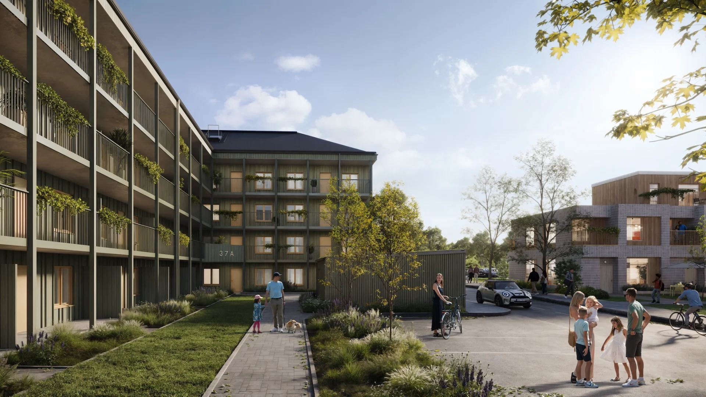
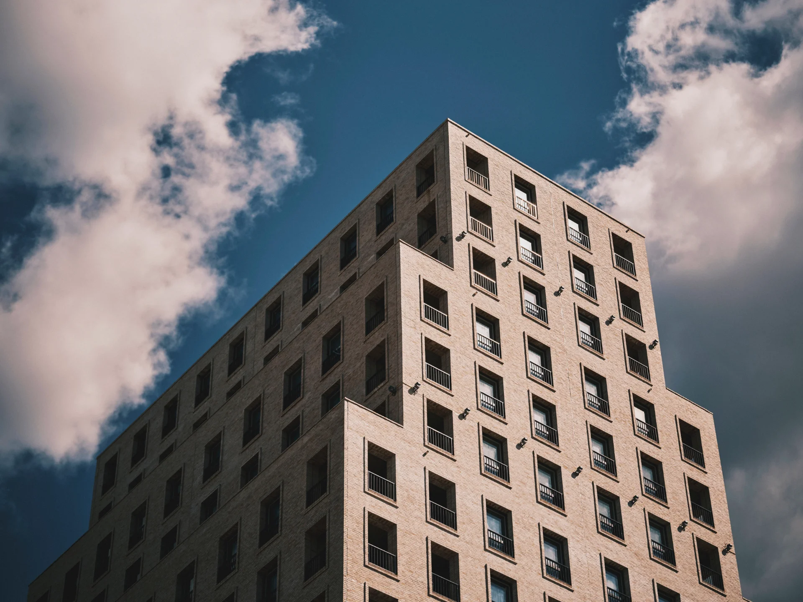
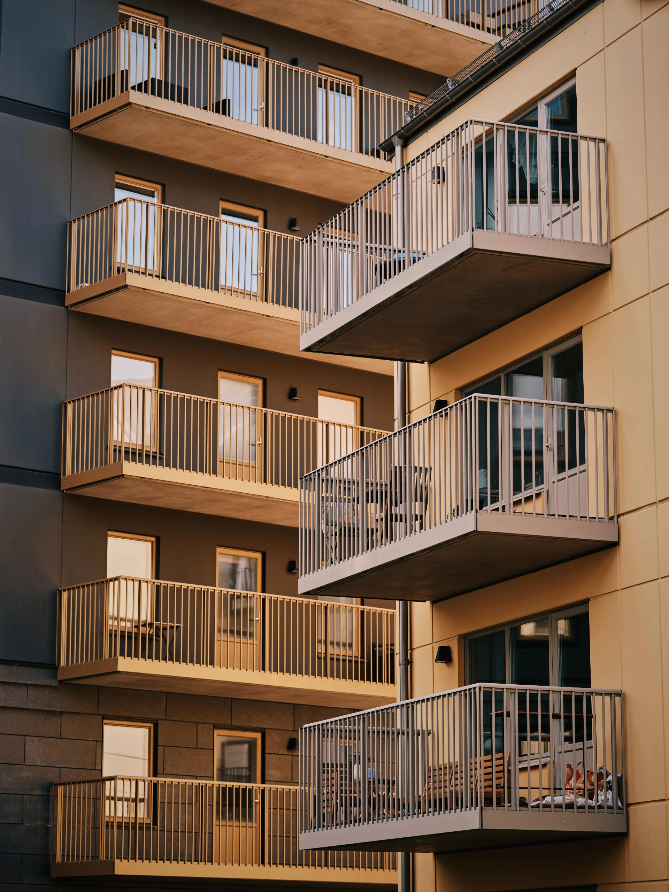
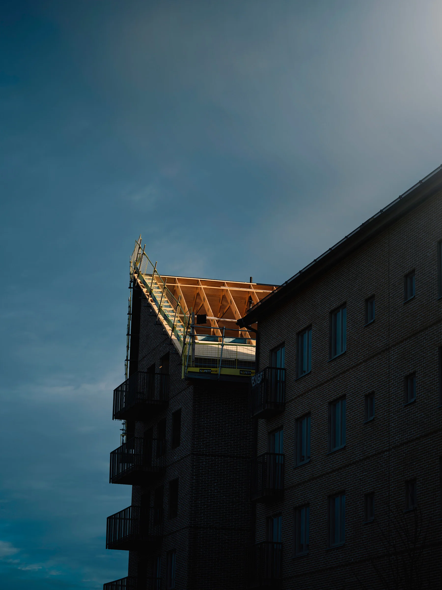
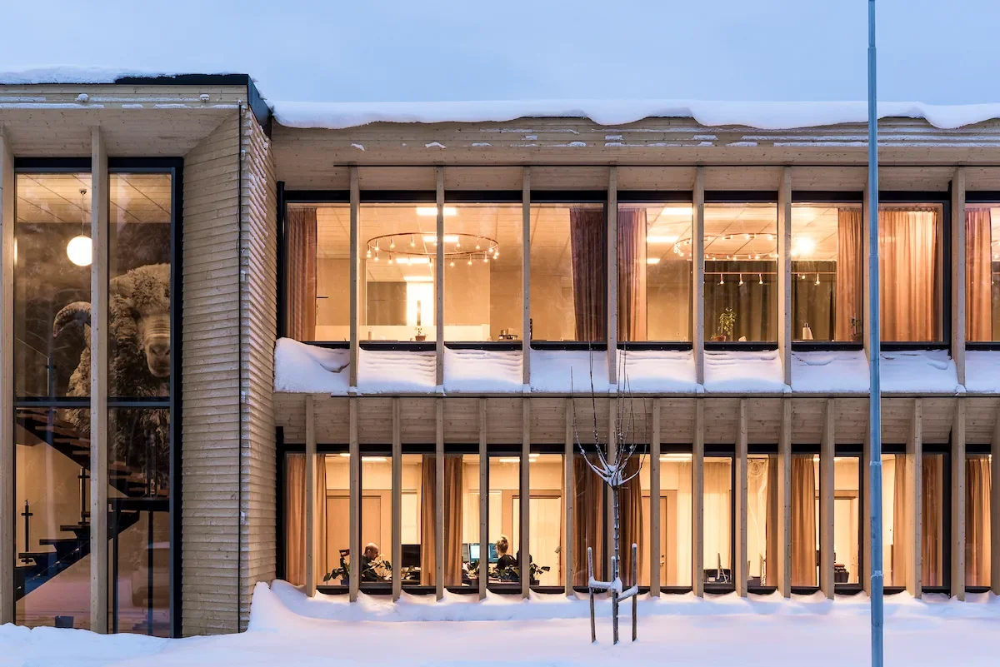

Se projektet
Se projektetBjörksången
45 st bostadsrätter · HP Bostäder
Från prefabricerade flerbostadshus till industrifastigheter och påbyggnader. Utforska våra uppdrag och människorna som gör dem möjliga.
10 projekt visas
Se projektet45 st bostadsrätter · HP Bostäder
 Se projektet
Se projektet336 hyresrätter · Wallenstam
 Se projektet
Se projektet43 hyresrätter, 12 delningslägenheter · Wallenstam
 Se projektet
Se projektet270 hyresrätter · Wallenstam

Se projektet134 hyresrätter · GENOVA | Property Group AB

Se projektet298 hyresrätter · Wallenstam

Se projektet189 hyresrätter · Wallenstam

Se projektet204 hyresrätter · Arwidsro
 Se projektet
Se projektet97 hyresrätter samt restaurang, butik & kontor · Wallenstam

Se projektetIndustrifastighet · Woolpower AB
En idé, en fastighet eller ett konkret projekt?
Låt oss prata om vad vi kan åstadkomma tillsammans.